waterflow.utility package¶
Module contents¶
This module contains additional functions for the flow problems.
Conductivity functions and a soil selector function
Several flow equations for (un)saturated flow problems and a storage change function
Grid spacing functions
Miscellaneous helper functions
Ready to use plot functions
Submodules¶
waterflow.utility.conductivityfunctions module¶
Conductivity functions and a soil selector function
-
waterflow.utility.conductivityfunctions.VG_conductivity(x, h, ksat, a, n)[source]¶ Hydraulic conductivity function
Unsaturated hydraulic conductivity function as described by [genclo80vGgenclo80vG80].
- Parameters
x (float) – Positional argument 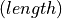.
h (float) – Soil water potential .
ksat (float) – Saturated hydraulic conductivity 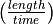.
a (float) – Empirical soil parameter 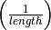.
n (float) – Empirical soil parameter 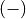.
- Returns
Hydraulic conductivity .
- Return type
float
Notes
This is the hydraulic conductivity function with the Mualem approach which means that parameter
 is fixed as described by [Mua76]
and [genclo80vGgenclo80vG80].
is fixed as described by [Mua76]
and [genclo80vGgenclo80vG80].(1)¶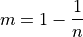
(2)¶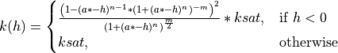
Note
For usage in the flow model,
Flow1DFE, the number of positional arguments needs to be reduced to two (x&h). Despite independence of argumentxin this function is needs to be included in the function signature. The other arguments need to be assigned a default value. See the examples section.Examples
>>> from waterflow.utility.conductivityfunctions import soilselector, VG_conductivity >>> from waterflow.utility.helper import initializer >>> soil = soilselector([3]) >>> p = soil[0][0] >>> # Without preparation >>> round(VG_conductivity(1, -10**2, p.ksat, p.alpha, p.n), 4) 0.2742 >>> # With preparation >>> VG_conductivity = initializer(VG_conductivity, ksat=p.ksat, a=p.alpha, n=p.n) >>> round(VG_conductivity(10, -10**2), 4) 0.2742
-
waterflow.utility.conductivityfunctions.VG_pressureh(h, theta_r, theta_s, a, n)[source]¶ Water retention function 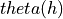
Soil water retention function as described by [genclo80vGgenclo80vG80].
- Parameters
h (float) – Soil water potential .
theta_r (float) – Residual water content as a fraction.
theta_s (float) – Saturated water content as a fraction.
a (float) – Empirical soil parameter .
n (float) – Empirical soil parameter .
- Returns
Moisture content as a fraction.
- Return type
float
Notes
This version of the water retention function is based on the Mualem approach with is described by [Mua76] and [genclo80vGgenclo80vG80]. Under this approach the parameter
is fixed.(3)¶
(4)¶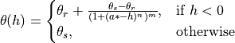
Note
For usage in the flow model,
Flow1DFE, the number of positional arguments needs to be reduced to one (h) and the remaining should be assigned a default value. See the examples section.Examples
>>> from waterflow.utility.conductivityfunctions import soilselector, VG_pressureh >>> from waterflow.utility.helper import initializer >>> soil = soilselector([8]) >>> p = soil[0][0] >>> # Without preparation >>> round(VG_pressureh(-10**4.2, p.t_res, p.t_sat, p.alpha, p.n), 4) 0.1079 >>> # With preparation >>> VG_pressureh = initializer(VG_pressureh, theta_r=p.t_res, ... theta_s=p.t_sat, a=p.alpha, n=p.n) >>> round(VG_pressureh(-10**4.2), 4) 0.1079
-
waterflow.utility.conductivityfunctions.VG_theta(theta, theta_r, theta_s, a, n)[source]¶ Water retention function, :math:h(theta)
Soil water retention function as described by [genclo80vGgenclo80vG80].
- Parameters
theta (float) – Water content as a fraction.
theta_r (float) – Residual water content as a fraction.
theta_s (float) – Saturated water content as a fraction.
a (float) – Empirical soil parameter .
n (float) – Empirical soil parameter .
- Returns
Soil water potential . Note that the sign of the value is switched.
- Return type
float
Notes
This version of the water retention function is based on the Mualem approach with is described by [Mua76] and [genclo80vGgenclo80vG80]. Under this approach the parameter
is fixed.(5)¶
(6)¶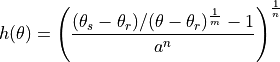
Note
For usage in the flow model,
Flow1DFE, the number of positional arguments needs to be reduced to one (theta) and the remaining should be assigned a default value. See the examples section.Examples
>>> from waterflow.utility.conductivityfunctions import soilselector, VG_theta >>> from waterflow.utility.helper import initializer >>> soil = soilselector([2]) >>> p = soil[0][0] >>> # Without preparation >>> round(VG_theta(0.25, p.t_res, p.t_sat, p.alpha, p.n), 4) 97.3908 >>> # With preparation >>> VG_theta = initializer(VG_theta, theta_r=p.t_res, theta_s=p.t_sat, ... a=p.alpha, n=p.n) >>> round(VG_theta(0.25), 4) 97.3908
-
waterflow.utility.conductivityfunctions.soilselector(soils)[source]¶ Select soil(s) from the Staringreeks
Select soil parameters from one or multiple soils as described in The Staringreeks [WostenVDS01].
- Parameters
soils (list) – Number(s) that correspond(s) to a soil in The Staringreeks.
- Returns
list with collections.namedtuple objects – Parameters of the selected soils in the same order as the input.
pandas.core.frame.DataFrame – Slice of the complete dataframe with the selected soils.
tuple with collections.namedtuple objects – Holds the parameter extrema of the selected soils.
Notes
The source file from which the soil data is read can be found in
DATA_DIR.Examples
>>> from waterflow.utility.conductivityfunctions import soilselector >>> params, df, extrema = soilselector([1, 10, 13]) >>> s1, s10, s13 = params >>> # Print some parameters of the selected soils >>> s1.soiltype, s1.name, s1.ksat ('B1', 'Non-loamy sand', 23.41) >>> s10.name, s10.t_sat, s10.alpha ('Light clay', 0.43, 0.0064) >>> s13.name, s13.Lambda, s13.n ('Loam', -1.4969999999999999, 1.4409999999999998) >>> df soiltype t_res t_sat ksat alpha Lambda n name category 0 B1 0.02 0.43 23.41 0.0234 0.000 1.801 Non-loamy sand s 9 B10 0.01 0.43 0.70 0.0064 -3.884 1.210 Light clay c 12 B13 0.01 0.42 12.98 0.0084 -1.497 1.441 Loam l >>> extrema[0].ksat 0.7
waterflow.utility.fluxfunctions module¶
Several flow equations for (un)saturated flow problems and a storage change function
-
waterflow.utility.fluxfunctions.darcy(x, s, gradient, kfun=<function <lambda>>)[source]¶ Flux function for saturated flow
Flow equation as first described by [Dar56].
- Parameters
x (float) – Positional argument .
s (float) – State of the system .
gradient (float) – Gradient 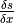.
kfun (func, default is 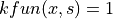) – Hydraulic conductivity function with signature 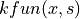 .
- Returns
Flux value .
- Return type
float
Notes
See the exact implemention of the [Dar56] function below:
(7)¶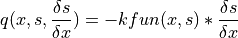
Tip
The function 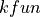 can return a fixed value if the saturated conductivity is needed instead of a hydraulic conductivity function. The
kfunargument may look like the following:(8)¶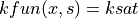
Which can be implemented in Python with a lambda function (lambda x, s: ksat) or just with a common function.
Examples
>>> from waterflow.utility.fluxfunctions import darcy >>> from waterflow.utility.helper import initializer >>> # In this case ksat is 1, negative gradient is returned >>> darcy(10, 5, 0.01) -0.01 >>> # Prepare the fluxfunction with a different default argument >>> def kfun(x, s): ... return -0.001 * x + s**1.2 >>> darcy = initializer(darcy, kfun=kfun) >>> round(darcy(10, 5, 0.01), 4) -0.0689
-
waterflow.utility.fluxfunctions.darcy_s(x, s, gradient, kfun=<function <lambda>>)[source]¶ Flux function for saturated flow
Flow equation as first described by [Dar56] which is altered to include a state dependency.
- Parameters
x (float) – Positional argument .
s (float) – State of the system .
gradient (float) – Gradient .
kfun (func, default is ) – Hydraulic conductivity function with signature .
- Returns
Flux value .
- Return type
float
Notes
See the exact implemention of the adapted function below:
(9)¶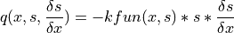
Tip
The function can return a fixed value if the saturated conductivity is needed instead of a hydraulic conductivity function. The
kfunargument may look like the following:(10)¶
Which can be implemented in Python with a lambda function (lambda x, s: ksat) or just with a common function.
Examples
>>> from waterflow.utility.fluxfunctions import darcy_s >>> from waterflow.utility.helper import initializer >>> # In this case ksat is 1, negative gradient is returned >>> darcy_s(10, 5, 0.01) -0.05 >>> # Prepare the fluxfunction with a different default argument >>> def kfun(x, s): ... return -0.001 * x + s**1.2 >>> darcy_s = initializer(darcy_s, kfun=kfun) >>> round(darcy_s(10, 5, 0.01), 4) -0.3444
-
waterflow.utility.fluxfunctions.richards_equation(x, s, gradient, kfun)[source]¶ Flux function for unsaturated flow
Flux function for unsaturated flow as described by [Ric70].
- Parameters
x (float) – Positional argument .
s (float) – State of the system .
gradient (float) – Gradient .
kfun (func) – Unsaturated hydraulic conductivity function with signature .
- Returns
Flux value .
- Return type
float
Notes
See the exact implementation of the richards equation [Ric70] below:
(11)¶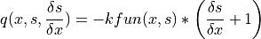
Note
For usage in the flow model,
Flow1DFE, the calling signature needs to be reduced to 3 positional arguments.kfunshould be given a default value, see the examples section.Examples
>>> from waterflow.utility.fluxfunctions import richards_equation >>> from waterflow.utility.conductivityfunctions import VG_pressureh >>> from waterflow.utility.helper import initializer >>> # kfun itself needs to be initialized too >>> VG_pressureh = initializer(VG_pressureh, theta_s=0.42, a=0.0748, n=1.44) >>> # Prepare the unsaturated hydraulic conductivity function >>> richards_equation = initializer(richards_equation, kfun=VG_pressureh) >>> richards_equation(0, -10**4.2, 0.1) -0.462
-
waterflow.utility.fluxfunctions.storage_change(x, s, prevstate, dt, fun=<function <lambda>>, S=1.0)[source]¶ Storage change function
General storage change function for both saturated and unsaturated flow simulations
- Parameters
x (float) – Positional argument .
s (float) – State of the system .
prevstate (func) – Converts a position,
 , to a state value
, to a state value  .
.dt (float) – Time step left(timeright).
fun (func, default is 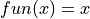) – Convert a state value,
, to a moisture content, 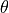,
in case of unsaturated flow.S (float, default is 1.0) – Sorptivity as a fraction.
- Returns
Flux value .
- Return type
float
Notes
Below the exact implementation of the storage change function is shown:
(12)¶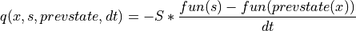
With specific arguments the storage change function can be used for unsaturated flow problems:
(13)¶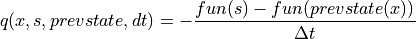
See the implementation for saturated flow problems below:
(14)¶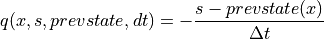
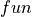 refers to a -relation of which one is defined in
conductivityfunctions()and 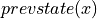 calculates the states of the previous time step as a function of position. The ready to use function can be found instates_to_function().Note
The Storage change function is a special case of an external flux function as described in
add_spatialfluxand assumes four positional arguments and any amount of keyword arguments, having a default value.
waterflow.utility.helper module¶
Miscellaneous helper functions
-
waterflow.utility.helper.initializer(func, *args, **kwargs)[source]¶ Prepare or reduce a function with default arguments
Reduce the number of positional arguments in
funcor change the default values of already set keyword arguments.- Parameters
*args – Positional arguments in
func.**kwargs – Keyword arguments in
func.
- Returns
Initialized function.
- Return type
functools.partial
Notes
This function is implemented as a combination of
functools.partial()to adapt the function signature andfunctools.update_wrapper()to copy the metadata fromfunc.Examples
>>> from waterflow.utility.helper import initializer >>> def f(a, b, c=3): ... return a, b, c >>> f(1, 2) (1, 2, 3) >>> f = initializer(f, c=10) >>> f(1, 2) (1, 2, 10) >>> f = initializer(f, 11) >>> f(b=2) (11, 2, 10)
-
waterflow.utility.helper.newdir(basepath, dirname)[source]¶ Creates new directory
Creates a new directory if it does not exist.
- Parameters
basepath (str) – Path to the location of the new directory.
dirname (str) – Name of the new directory
- Returns
Absolute path including the new directory.
- Return type
str
waterflow.utility.plotting module¶
Ready to use plot functions
Subjected to change, will be documented in the future
-
waterflow.utility.plotting.quickplot(df, x, y, ax=None, ax_sec=None, xlabel=None, ylabel=None, title=None, legend=True, grid=True, save=False, savepath='C:\\Users\\bramb\\Documents/flowoutput/', filename=None, **kw)[source]¶
waterflow.utility.spacing module¶
Grid spacing functions
-
waterflow.utility.spacing.biasedspacing(numnodes, power, lb=0, rb=1, maxdist=None, length=1)[source]¶ One dimensional nodal spacing function
Returns an array that contains a biased nodal distribution in which distances increase from left to right.
- Parameters
numnodes (int) – Total number of nodes that is used for the nodal spacing.
power (int or float) – Degree of nodal shifting to the left of the domain.
lb (int or float, default is 0) – Left bound of the domain.
rb (int or float, default = 1) – Right bound of the domain.
maxdist (int or float, default is None) – Maximum distance allowed between two nodes. The value of the length argument should be accounted for if given.
length (int or float, default is 1) – Multiplier to scale the nodal positions.
- Returns
Nodal positions in the x-direction.
- Return type
numpy.ndarray
Notes
The nodal discretization is calculated iteratively. Note that aliases of the function arguments are used.
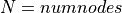 ; 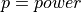 ; 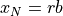
(15)¶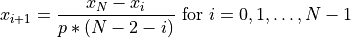
When maxdist is given and any of the nodal distances exceed this limit the nodes are shifted towards the right boundary of the domain until the maxdist condition is met. Shifting occurs proportionally.
Examples
Linear spacing with scaling
>>> biasedspacing(11, 1, length=10) array([ 0., 1., 2., 3., 4., 5., 6., 7., 8., 9., 10.])
Non-linear spacing without scaling
>>> biasedspacing(11, 3) array([0. , 0.03703704, 0.07716049, 0.12110523, 0.16993272, 0.22527054, 0.28983133, 0.36873896, 0.47394913, 0.64929942, 1. ])
Non-linear spacing with scaling and custom domain boundaries
>>> biasedspacing(11, 2, lb=-1, rb=1, length=10) array([-10. , -8.88888889, -7.70833333, -6.44345238, -5.07316468, -3.56584821, -1.87011719, 0.10823568, 2.58117676, 6.29058838, 10. ])
Non-linear spacing with maximum nodal distance limitation
>>> biasedspacing(11, 5, maxdist=0.4, length=2) array([0. , 0.04815903, 0.09747244, 0.15250051, 0.21499075, 0.29019617, 0.4 , 0.8 , 1.2 , 1.6 , 2. ])
(Source code, png, hires.png, pdf)
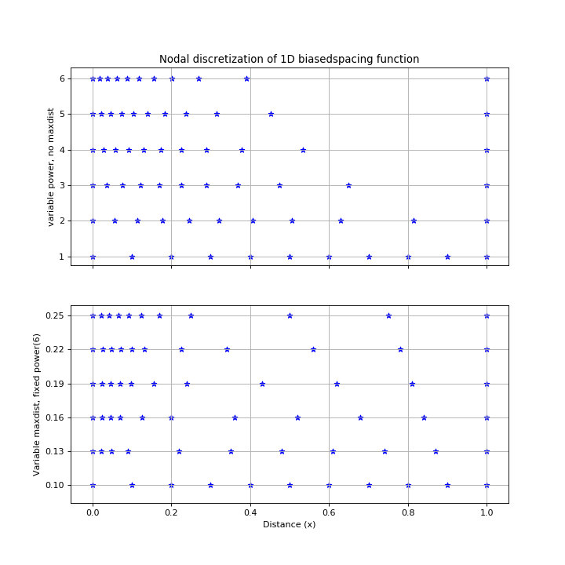
{kind=link}
{kind=link}
-
waterflow.utility.spacing.spacing(nx, Lx, ny=0, Ly=0, linear=True, loc=None, power=None, weight=None)[source]¶ One and two dimensional nodal spacing function.
Return two arrays that contain a discretization which may be focussed on selected locations.
- Parameters
nx (int) – Number of nodes in the x-direction.
Lx (int or float) – Total length in the x-direction.
ny (int) – Number of nodes in the y-direction.
Ly (int or float) – Total length in the y-direction.
linear (bool, default is True) – Distinguish between linear and non-linear nodal distributions.
loc (list, default is None) – A list of nodes or coördinate tuples on which to concentrate nodal discretization.
power (int, default is None) – The number of nodes that are influenced by the nodal concentrations given at the loc parameter.
weight (int of float) – The degree of nodal concentration around a given loc.
- Returns
numpy.ndarray – Nodal positions in the x-direction.
numpy.ndarray – Nodal positions in the y-direction.
Notes
Make sure that the power argument does not collide with adjacent nodes or boundary nodes that define the domain. Improper use will result in wrongly defined domains.
Examples
One dimensional linear example
>>> nx, Lx = (11, 10) >>> x, _ = spacing(nx, Lx) >>> x array([ 0., 1., 2., 3., 4., 5., 6., 7., 8., 9., 10.])
One dimensional non-linear example, 1 node around the locations of interest are influenced by a factor weight
>>> x, _ = spacing(nx, Lx, linear=False, loc=[4, 7], power=1, weight=3) >>> x array([ 0. , 1.22222222, 2.44444444, 3.66666667, 4. , 4.33333333, 6.66666667, 7. , 7.33333333, 8.66666667, 10. ])
(Source code, png, hires.png, pdf)
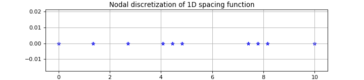Two dimensional non-linear example, 2 nodes around the location of interest are influenced by a factor weight.
>>> ny, Ly = (11, 10) >>> x, y = spacing(nx, Lx, ny, Ly, linear=False, loc=[(4, 5)], power=2, weight=4) >>> x array([ 0. , 1.65625 , 3.3125 , 3.75 , 4. , 4.25 , 4.6875 , 6.015625, 7.34375 , 8.671875, 10. ]) >>> y array([ 0. , 1.4375, 2.875 , 4.3125, 4.75 , 5. , 5.25 , 5.6875, 7.125 , 8.5625, 10. ])
(Source code, png, hires.png, pdf)
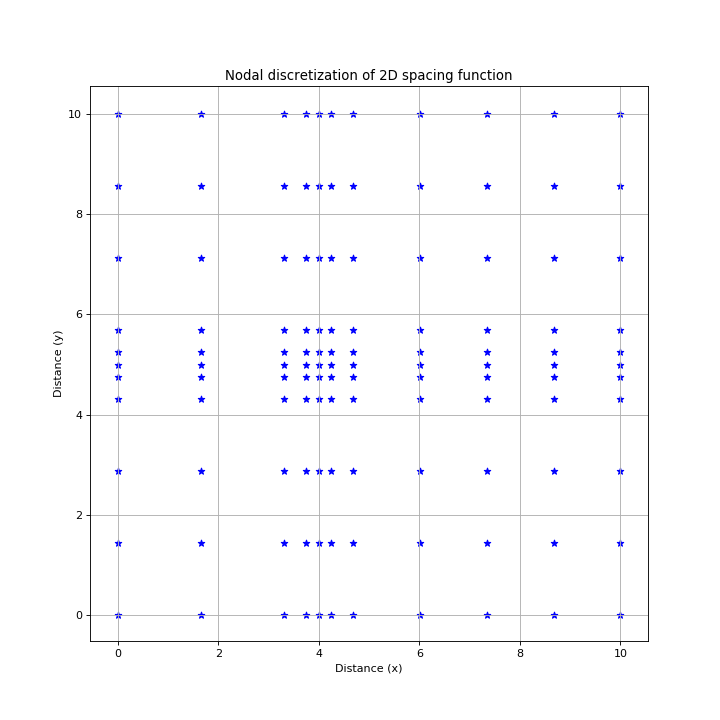
{kind=link}
{kind=link}
{kind=link}
{kind=link}